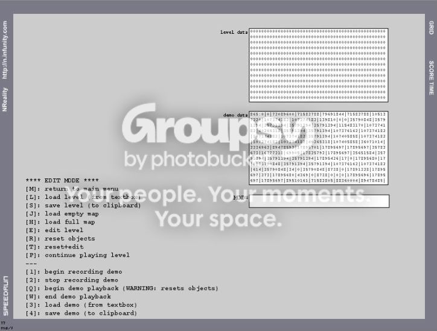

#438209 122 2008-05-22T02:14:55Z ~Chad Damn, too late, ahh well, I would have lost anyways.
p.s. 1st post!!!!
p.s.s. you didn't exactly help setting up my account Kim.....
#438217 777 2008-05-22T02:25:22Z ~Chad Great simplicity but maintaining to keep elegance, but I'm taking a biased on you because your my friend,
but your old name kicks butt, Hippos rule!! can your sig tag affect it???
8.23765/10
69!!!!!!!!!!!!!!
#438705 36 2008-05-24T00:55:28Z ~Chad I trust if the forum go through with this (I voted yes)
then slightly more elaborately made images can be made
(not too complicated though)
#438708 38 2008-05-24T01:07:24Z ~Chad nevermore, are there any desktop buddies for macs???

#438720 17 2008-05-24T01:45:00Z ~Chad LOTS of potential. Nice job making a mac one!!!!!!!
great job, should I be waiting for a new version???

#438721 45 2008-05-24T01:50:33Z ~Chad Is it possible to work with macs???
#438724 1309 2008-05-24T02:29:49Z ~Chad 
a ten minute desktop using cs2, god, I love business expenses.
DO NOT DELETE is my alias for everything, I keep EVERYTHING in there.
#438725 910 2008-05-24T02:36:13Z ~Chad Heeyy,
I'm chad, ya...
I had an account before (chad_sxtn13) and for some reason I can't use it anymore.
LOVE N the forum, NUMA, all that like.
#438729 433 2008-05-24T03:09:43Z ~Chad #438731 11 2008-05-24T03:14:04Z ~Chad SO
F*N
BEAUTIFUL
sorry for the caps.
Purple!!, this in an amazing guitar!!!
#438732 151 2008-05-24T03:26:50Z ~Chad What about episode Highscores??
there easy to get.
p.s 10th post!
#438795 65 2008-05-24T14:14:07Z ~Chad beautiful design, nice but un- nbiased color-scheme
#438796 14 2008-05-24T14:18:32Z ~Chad Quality over quantity all the way
#438797 25 2008-05-24T14:22:32Z ~Chad How do you get the smooth glossy aesthetic on green?
Btw, you got some nice stuff! and great Ideas!
#438798 1311 2008-05-24T14:25:25Z ~Chad maze maker, did you draw that, nice! you+graphics pad= photoshop madness!!
#438799 40 2008-05-24T14:27:28Z ~Chad ohhh, I haven't been on the forum for a year too, lol
anyone else know??
#438928 153 2008-05-25T01:14:23Z ~Chad I'm in!!!!!
thx be Happy!!!
#438951 76 2008-05-25T02:59:24Z ~Chad Im in!!
(after my haircut....)

#438979 157 2008-05-25T06:31:53Z ~Chad
feeble attempt at a logo esque thing

#438982 159 2008-05-25T07:13:23Z ~Chad I could make it smaller ( and make the fade better)
but the font I was using didn't have a 2.

but just ask if you want another
A.K.A I work my ass of and make a 9/10 one, then someone else
spits one ten times better out in half a second effortlessly
#438986 3 2008-05-25T07:56:34Z ~Chad can't wait to beat them all
#439098 167 2008-05-25T19:31:24Z ~Chad what happens if neither reach 20???

seeding?
#439108 3 2008-05-25T20:33:35Z ~Chad I'm sooo in!!!!!
hmmm,
Sweden,
my brothers.
(could we change it to Norway?)
Canada
alot of candidates...
Italy
I'm culturaly more Italian than
most Italians I know
#439111 2045 2008-05-25T20:38:28Z ~Chad ^Banned for being dead
p.s.
69 pages!!!
#439160 171 2008-05-25T23:15:49Z ~Chad how is this and the World Cup going to work out time wise???
P.s. is this speedrunning, or highscoring????
#439197 176 2008-05-26T00:46:23Z ~Chad I can't figure out how to put my score on!!!!

Btw, can there be a losers-sub-tourney??
I'm up against George and I sure some other people are completely out matched.
Please, I'll help!!
#439205 178 2008-05-26T01:15:16Z ~Chad well then, I is teh ready 2 Rawx
(my demo won't be hard to imoprove)
#439207 4 2008-05-26T01:19:29Z ~Chad hows about, Hiphopopotmus?
#439505 1590 2008-05-26T23:41:01Z ~Chad Is there any difference between submitting a userlevel map highscore for a mac? because whenever I cntrl+click it, it just right-clicks!

NVM: with macs ,you just apple+click!!!!
#439540 19 2008-05-27T01:50:06Z ~Chad Quote
sounds a bit lesbian
Wow... lol

you kimmie
#440046 241 2008-05-28T21:32:53Z ~Chad Cheese factory ftw!!!!!!
#440051 9 2008-05-28T21:52:54Z ~Chad I hate two letter typos, like ti and ni.
but those don't get me as much as when people go
(usually in math class)
"then you times N by Pi".....
or, "then you plus x and one"...
OR, "then you minus six and two"....
#440054 59 2008-05-28T21:59:26Z ~Chad Awww, love Jazzy... tell her I luvs her Kim..
Charlotte
(after my friends black cat Charley)
#440060 15 2008-05-28T22:10:37Z ~Chad I love N art, it's a great idea.. but I don't like How it dominates the toprated pages,
N art is good but not what the soul purpose of N is
#440123 28 2008-05-29T01:31:29Z ~Chad A BIT of english, thats all.
#440373 34 2008-05-30T00:57:27Z ~Chad how can you only speak a bit of one language?
I is not good at it.
#440375 269 2008-05-30T01:13:46Z ~Chad George, are you done your first? please submit it, unless there are innovations, I have NO chance, don't leave my waiting to figure out how much I lost by!!!
#440910 284 2008-05-31T21:16:39Z ~Chad George, are you done your first? please submit it, unless there are innovations, I have NO chance, don't leave my waiting to figure out how much I lost by!!!
*Fires up N Reality*
I was going to leave it to the weekend, but I guess I'll have a shot at it now.
Edit: There's my first completion after 15 minutes worth of effort. Not very good, I suppose.
Thanx

#441092 34 2008-06-01T16:36:06Z ~Chad the alien KILLS it, otherwise it was good.
#441149 47 2008-06-01T23:16:21Z ~Chad no offense to everyone with macs but if you have a mac and something doesn't work, get a PC, ignore that you can't get the program and don't post about it!!! I get so pissed when everyone says: Does it work with mac? Its not working for mac! OMG why isn't it working!!! 
calm down, its just a question, its not like its burdening you.
anyways, maybe not everybodycan get a windows just to run a few little programs.
and ignorace usually isn't a good solution.
#441564 3 2008-06-03T18:06:56Z ~Chad WE ARE SOOO GOING GUITAR SHOPPIN', Steves??
um, you have a good acoustic, your shmexy luna...
Maybe an electric with a good body??
#441567 49 2008-06-03T18:09:34Z ~Chad no, but thanx alot, I'm sure its amazing!!
(else I wouldn't have rebuttled against Jono)
#441568 323 2008-06-03T18:12:37Z ~Chad I can't beat a highscorer,


I is makin sum siggytags!!!!
#442087 66 2008-06-05T03:28:32Z ~Chad Wow, your bleeds are REALY good, and your good at smooth atuff, Nice!!!
#442577 6789 2008-06-07T01:30:11Z ~Chad 6.7/10
Pretty cool but in my opinion not too tied together.
#442581 9 2008-06-07T01:38:03Z ~Chad I definitely think it depends on solely the map. For instance:
This is an action map: http://nmaps.net/64419
This is a puzzle: http://nmaps.net/99641
I think the classification has a lot to do with the amount of freedom involved and the level of difficulty, but as long as there is a prevalence of mines that form the main gameplay mode, then it's a minejumper in my eyes.
definitely, if its not puzzling its not a puzzle.
#442582 26 2008-06-07T01:43:33Z ~Chad Champaign, sometimes when its REALY old it gets a sort of tang.
(I know this from, uh, secondhand sources)
#442701 3059 2008-06-07T14:39:13Z ~Chad granted but then he becomes a spammer to earn more pips.
Wait, Becomes?.......
I wish I was a good highscorer
#443013 4 2008-06-08T16:01:00Z ~Chad I believe its motherlode
as in a lode of gold.
#443092 3068 2008-06-08T21:54:29Z ~Chad granted, but then you wish again
p.s just jokin mazemaker
I wish no one would corrupt my wish
paradox!!!

#443098 17 2008-06-08T22:00:19Z ~Chad only slight visual variations would be good.
like a head band, as tribulation said.
any more complicated and it would ruin the game.
good idea though

#443405 53 2008-06-10T03:05:14Z ~Chad You are a great mod, I will miss you.
#443559 15 2008-06-10T19:57:48Z ~Chad you can buy them in the US and bring them to canada, but they don't sell in canada because of some licensing thing about the sim card or something.
#443583 19 2008-06-10T22:14:23Z ~Chad i can also help with sigtags if riseagainst cant for some reason.
just pm me any spesific colors, renders or themes if you want.
#478010 (forumer) 11 2008-06-10T22:32:00Z ~Chad you could go far with this, keep it up!!
#478203 (forumer) 14 2008-06-11T21:52:00Z ~Chad sorry because there were only two, I assumed there would be more.
#444084 9 2008-06-13T00:08:15Z ~Chad Not to sure... but because of all the superfluous new additions... no, not now
#444087 1589 2008-06-13T00:12:42Z ~Chad 79% your nice
#444088 23 2008-06-13T00:14:33Z ~Chad I thought you accidentally created a topic, then changed it to "delete me, I'm sorry!".
Seriously.
so did I
#444096 61 2008-06-13T00:40:42Z ~Chad I like the beat, but I can't stand 4 year olds dancing around singing it, not knowing the derogitory sexual implications there chanting. though the bulk of his popular song are the same thing remixed (I'm probably wrong though, seeing as I rarley ever listen to him). the dance is fun tho

EDIT: I
completely agree with demonz!!!!!!!
#444128 95 2008-06-13T02:19:12Z ~Chad Thanks a lot for distracting me from reality and helping me keep a cool head.
though N is really ruining my life
#444131 40 2008-06-13T02:25:10Z ~Chad Lovin my legs and my bike recently
anyway, 1.50/L average in T dot
#444132 45 2008-06-13T02:29:59Z ~Chad Krypton, Because it noble!

but only because of the mood I'm in
#444138 760 2008-06-13T03:44:23Z ~Chad I know there hasn't been a post in awhile, but my [asshole]dads[/asshole] bitch if a removed for so much excessive profanity it would rot your brain
What do I do!!!!
#444140 57 2008-06-13T03:47:27Z ~Chad your maps make me happy.
#444145 31 2008-06-13T03:54:25Z ~Chad Ohh god I wish
#444146 239 2008-06-13T04:03:19Z ~Chad This is spinal tap
#444148 56 2008-06-13T04:04:10Z ~Chad I'll try
#444346 97 2008-06-14T02:05:43Z ~Chad though N is really ruining my life.
goooood. It's working.... ")
Hah ha..
#444630 20 2008-06-15T01:15:55Z ~Chad Evreybody is leaving...
For all I know. Thyere is only 4 mods active right now.
wedgie
meastro
Atilla
George
Yeah.
Thanks.
love you dave
#444636 241 2008-06-15T01:23:08Z ~Chad Thunderpants!!!!
#20532 1 2008-06-15T14:26:30Z ~Chad Wondering who invests in what!
#444835 46 2008-06-15T14:44:28Z ~Chad Dude, th fuck. o______0
you better start making maps...
I don't hate you for this, but it makes WoW o_0
or whatever his name was seem like LV, and as everyone knows, LV is a limited edition Jesus,
with flying spagetti monsterism action apendages.
and a legend
#444843 53 2008-06-15T14:52:52Z ~Chad this thread is almost half of oranges post! lol
/\ thanx is nice!
#444970 153 2008-06-15T16:41:40Z ~Chad 
arggggggggggggg
#445011 162 2008-06-15T19:17:37Z ~Chad What the hell is going on here? Doesn't post count accumulate here?
No not in B&T or message board games, not sure about the details though..
#445013 10 2008-06-15T19:22:18Z ~Chad 
normal safari, how do I change it?
#445702 25 2008-06-17T19:54:16Z ~Chad This level isn't as tedious as a lot of levels. 69-2, 79-4, 88-4, 89-3, and 96-4 are a few that took me much longer than 67-4. It's tricky, but you just have to know where to go; it's all trial and error.
Keep at it! You'll get through it, and then you can do a little dance and tell your friends that your are uber awesome at N.
And then you'll hit 69-2 and have a hernia....
soo true, I love blue_tetris for MTI, but I sometimes get mad at metanet for 69-2, now that level is bullshit
#445704 5 2008-06-17T19:56:39Z ~Chad ya, I didn't expect many people to reply, but come on guys! investors, represent yourselves!
#445862 12 2008-06-18T03:18:19Z ~Chad hilarious, is this real for the most part?
#446942 7 2008-06-21T01:36:13Z ~Chad 2 years ago I advised one of my teachers to invest in a mining company called Rio Tinto, and she didn't listen to me. Since then, the share price has increased from 25.00 a share to 60.00 a share. I don't invest, but if I did, that's where I would've made my money. Mining companies are usually reliable.
nice!
#447857 455 2008-06-23T14:23:10Z ~Chad If anyone didn't know (why would you) Kimmies at her cottage and probably can't go on teh internet or make maps
then she's going to camp...
#447915 98 2008-06-23T19:49:06Z ~Chad #448293 100 2008-06-24T19:59:51Z ~Chad If you're going to advertise in this thread, the least you could do is read the first few lines of the first post:
Please tag all image maps with "nreality" and " image-map"!

That said, your post has made me realize that it's probably best if I include thumbs of all new maps in any of my update-declaration posts.
well, I did tag it N-reality.. next time I will. Also, I posted the map
after I read the tread

ya, I was intending to make it easier to post the thumb nail.. I posted It
because
I read the tag requirements and didn't do both.
#448417 470 2008-06-25T02:54:45Z ~Chad Max Ride gets it all the way, especially considering how much he's contributed to the MPTs!
#448420 25 2008-06-25T03:02:19Z ~Chad WOW I thought Jaw dropping was just an expression!
#448521 17 2008-06-25T13:37:58Z ~Chad people should have the right, ciggys are just stupid though.
#448523 52 2008-06-25T13:54:15Z ~Chad New Sig and a tutorial that originated from a PM!

Here is how you make the sig:
First you place your render and duplicate it. Put the duplicate on the bottom and smudge the balls out of it with mai settings to get a matching bg.
Make duplicates of the original render and call them, "Dark Smudge," "Normal Smudge," "Light Smudge," "Original," "Original 2." Put "Dark Smudge" on the bottom, "Normal Smudge" above that, "Light Smudge" above that, "Original" above that, "Original 2" above that.
Set all of the layers to Overlay except for "Original."
Now smudge "Dark Smudge" on Darken.
Smudge "Light Smudge" on Lighten.
Smudge "Normal Smudge" on Normal.
Smudge "Original 2" a bit to make it look cool.
Smudge "Original" to add to the coolness.
Now, New Layer, Image -> Apply Image. Filter -> Sharpen -> Sharpen. If it's too sharp, go to Edit -> Fade Sharpen -> about 50%.
Now, New Layer, Image -> Apply Image. Filter -> Blur -> Gaussian Blur -> 4.3 px. Set this layer to Lighten and 50% opacity.
Now, New Layer, Image -> Apply Image. Set this layer to Overlay and 50% opacity.
Now, New Layer, Image -> Apply Image. Filter -> Distort -> Glass -> Distortion = 8, Smoothness = 12, Texture = Frosted, Scaling = 200%. Set this layer to Soft Light. You can reduce the opacity a bit if you want.
Now, New Layer, Image -> Apply Image. Filter -> Distort -> Lens Correction -> Default Settings except for Vignette -> Amount = -200%.
Now you add your text and your border, and you're finished.
kthx.
Izzy
What about scanlines, assuming you know how to use them? Also,
awesome stuff!!
#449004 384 2008-06-27T03:28:03Z ~Chad The bounce pad one, "Trampoline" was very helpful!! but the last bounce pad is cheatable; you can "tap jump" off it. sorry if its been said, I know thats not what matters though..
btw, the demos weren't there when the Data was parsed.

#449007 60 2008-06-27T03:38:02Z ~Chad I like the hot dog sig. I can't eat hot dogs, though. And I'm not sure if that's really fast food. Now that I think about it, I've never bought a hot dog like at a resturant. Might have something to do with the fact that I can't eat hot dogs.
I like the burger one too
Why can't you eat hotdogs? do they give you heart attacks or something?
#449008 24 2008-06-27T03:51:08Z ~Chad Satire at its best, compares to Mozart's Operas LOL
#449009 1342 2008-06-27T04:04:09Z ~Chad used this one for a few days. I think I copied the general Idea from some where else though, not gonna lie

EDIT: used it
just because I have a Mac
#449010 34 2008-06-27T04:10:53Z ~Chad No worries Turiski.
Also, this might not work, but what about like facial expressions on the drones..
Like the normal zap drone stays the same, but when it chases you, there's this: except cut in half?
That'd be kinda neat.
thats Genius!!!!!

Like using animators drones as drone skins or something!!!!!!!
to add to what was said earlier, you could buy pre-made episodes that Numa users made but won their spot like sublime.
or pre-made By M&R
#449567 39 2008-06-29T20:50:10Z ~Chad Using animator's drones as skins would be cool, but then there should be a list of what skin goes with what drone sorta thing. Like:
Zap Drone can use skin 1,4,7&10
Laser Drone can use skin 2,5,6
etc etc. And you preview it and can decide which to get.
true, I was using animator as an example, there should be a small archive on them if so, and a mod esque person to decide what skins get in
#449569 32 2008-06-29T20:54:06Z ~Chad Surprisingly entertaining. What a great arrangement of the original song...
Original song? GIMME!
Beethoven's Fifth Symphony?
ninth I presume???
#20668 1 2008-06-30T04:53:08Z ~Chad I was trying to speed-run Break by LV when to my disappointment, I jumped low under a bounce block, tapped the jump button, and to my surprise, jumped from the bottom right corner!
I have some vague screenshots but to further description or proof. sorry, and also sorry if this has been discussed before.
Dust cloud and distorted trajectory. (These are
not edited.)
another similar one

I didn't actually see this one, it was a lucky screen capture, pretty sure the exact frame before I jumped.
#450518 3 2008-07-03T18:19:29Z ~Chad By common consensus, you are jesus
#450534 767 2008-07-03T19:15:58Z ~Chad never question LV, ever
#450914 11 2008-07-05T15:57:40Z ~Chad sorry to hypothetically put more on your plate, but would it be possible to alter the centre of gravity for the whole map??
(I don't think centre of gravity is the right term though..)
#450935 13 2008-07-05T17:35:27Z ~Chad kay, thanks
btw what's the "transparent update finished loading" thingy????
#451902 512 2008-07-09T23:27:20Z ~Chad And of what physical manifestation would your omnipotent lord be???
(other than the beard)
ohh.. nvm
#451938 15 2008-07-10T01:38:23Z ~Chad my friends egged me into facebook, and I don't regret getting it in the least. Its helped me orginize my scocial life alot better.
(Ha, like I have scocial life)
#20756 1 2008-07-10T01:58:29Z ~Chad please only post or vote reasonable answers.
(try to use the adverage ms/f)
#452028 5 2008-07-10T12:28:07Z ~Chad not how much it went up, the highest youve beaten a map with, like "I beat W00teen17 at 204 ms/f"
or, "I beat motherlode at 83 ms/f"
not the highest your ms/f has ever gone.
#452255 11 2008-07-11T13:49:43Z ~Chad 7462 ms/f, last week. I was running Newgrounds, Metanet Forums and NUMA in the background.
somehow, I doubt that is possible, unless no enemies could get at you and the path was only holding one button, same with maze maker, thats kinda iffy...
btw, how do you edit the answers???
#452257 516 2008-07-11T14:04:11Z ~Chad i dont know what opnipotent means, but i do know that i was talking to animator. You know. The guy that makes drones out of request.
*proceeds to go through 15 pages of drone and drone non related material looking for the god drone*
It's not like I'm making a drone in his stead. I'm just asking a question
(probably not phrased the same:p) that he would have likely asked any way, saving him the hassle of asking, and
you a little time.
p.s. Don't know what omnipotent means?gotta love Google!
http://www.google.com/search?hl=en&rls=com...nipotent+define#452259 13 2008-07-11T14:19:19Z ~Chad The checkbox is a good idea!!!
#452260 2 2008-07-11T14:28:40Z ~Chad to for complicated for N and coding and stuff,(I think for coding) cool idea though, also, stuff like this (flipping) has been proposed before.
#452376 19 2008-07-12T02:02:06Z ~Chad ~7000 ms/f once when I had a movie running, iTunes on, and Photoshop going. And the map was by cluttered with laser drones and rockets.
how the Sweep did you survive??????
Mine idles at 7ms/f, plays at ~8ms/f on almost all maps. Highest I've ever gotten is ~20ms/f on a noob map full of enemies clustered together.
holy shit thats fast! are you sure you don't mean 17 & 18? thats my average.
#452380 7 2008-07-12T02:09:45Z ~Chad HOLY F*CKING SH*T
its inconceivable how much of you share for the benefit of this community, you are truly a legend, A bright burning torch in the darkness of an era of n00bs, lighting our way. LV bless you.
#452461 10 2008-07-12T15:52:08Z ~Chad so they follow new algorithms?????
what do you mean brain???
EDIT: because you could make something transparent and immobile, could you make goomba esque thingy out of a floor guard that moves slowly and if you touch the top of it* it immediately becomes immobile and invisible ( through transparency)??????? hypothetically. * top half/quarter kills it and bottom kills you, but if you hit both it prioritizes bottom.
#452632 522 2008-07-13T13:39:27Z ~Chad Beheheheh. BM-bot.
YESSSSSS thank you! this is amazing!!
HAAADOOOKEEEEENN!!!!#457979 9 2008-08-03T23:59:51Z ~Chad the problem is that "going green" is becoming a fad, and global warming not being treated as an actual issue to the populous . People are viewing real problems as fads and making changes only large enough to be able to say they have. Also, the technology for environmentally friendly cars is completely ready, but not the economy. Last year, Panasonic made 1 person car that runs with about 50% the efficiency of a regular car on AA batteries. the technology could be used easily to make a fully functioning car for cheap, (well until demand goes up). Electric cars could have been implemented years ago, but the economic impact would be horrible. car companies would have to adapt, gas companies would go out of business, (though they could switch to supplying electricity charges for cars or whatever the hell they do, still the mining companies would shut down.) then, electricity prices would most likely shoot through the sunroof. but ya, I'm a stupid kid, I Pretend I'm smart.. though, I herd about a movie about the let down of electric cars and stuff.
#457993 6 2008-08-04T00:39:23Z ~Chad I do, my guitar is a piece of ass less fun though
to the picture directly above, my friend recently got a simiar B.C. Warlock with a black finish with red details for $200!
#458019 7270 2008-08-04T02:42:50Z ~Chad 7.4/10
well done, but the border and placement is a little iffy,
and the square aspect.
(I'm somewhat of a perfectionist though)
VVVV that to me or Incluye????
#458029 7274 2008-08-04T03:27:43Z ~Chad 7/10
LOVE luigi!
good pic (I love the game)
good matching graphics.
not fond of the square.
white around luigi manages to actually work well!!!
#458331 27 2008-08-05T01:32:16Z ~Chad 75954
I had some about 1000 maps earlier but they got killded

#458348 73 2008-08-05T02:45:54Z ~Chad Is it too late for me to join?

#458352 64 2008-08-05T03:13:56Z ~Chad I don't but I know someone who can't walk on the right side of people
I have that, for me its purely spatial, I feel more secure if am on the left side of people or they have to be on my right. I loathe left and right opposed to up and down, because verticality oriented direction references gravity, left and right bug the hell out of me because they're asymmetrical all the time. I require balance. sometimes my body feels uneasy when I walk because of the switching of left and right, and I need to step with both feet equal times. I'm weird.
#458358 20 2008-08-05T03:43:26Z ~Chad I'm not talking about the consumer saving money, I'm talking about car and gas companies losing money, along with they're workers. like you have oil mining companies, employees, investors, people who rely on a company for finance, then all the demand for oil goes down and they shut down some operations, employees run out of jobs and so do investors, people loose money. but as I said, I'm a stupid kid, don't take what I say with heavy regard.

#458491 10 2008-08-05T15:24:09Z ~Chad #458493 7 2008-08-05T15:27:39Z ~Chad Amazing!
#458542 15 2008-08-05T19:40:14Z ~Chad ||||2,ChaingunRate,24;2,R,100;2,chaingunPrefireDelay,0;2,chaingunPostfireDelay,0;jumpgrav,-0.10;max_jump_time,infinity;#
the playermods aren't working, could someone please tell me what's wrong?
#458550 17 2008-08-05T20:08:12Z ~Chad thanks a lot!!!
I can't believe I oversaw that,
#458640 107 2008-08-06T02:18:46Z ~Chad Maybe a kind of Gauss Turret or Homing Launcher that firest like the ordinairy ones, but when they hit you, you aren't killed. You just are catapulted away. 
not sure if this has been touched on or is impossible, but using the same propulsion as used in forcefield drones with higher power and a lower blast radius on a rocket. or a small radius ff drone that follows you like a boo drone that never disappears, is faster, and cant go through walls etc.. ?
#458647 72 2008-08-06T03:33:10Z ~Chad Oh crap, nevermind, ignore this..
#458730 114 2008-08-06T14:47:59Z ~Chad An update to Ned-reality
I believe it's time that in the next update of Nreality we see the Nreality drones available in Ned under the Function buttons (F1, F2, F3, etc.).
It's a very big turn-off to have to put the code back in and edit the code if you want something different and then load it and have to redo it if something isn't right...
Possibly when you click the function button that corresponds with the drone a menu pops up and allows you to edit all the attributes of the drone, with a button that says "okay" or "done" or something and then it is placed where you specify it after you've edited the modifications.
or another small clipboard-esque typing thing where you can score codes and/or/without,
when you type in it say, you type J, then it doesn't load an empty map, thats probably impossible though..
like this

#458994 28 2008-08-07T14:37:44Z ~Chad !6^204,252,6,0,16,3^^^UUUUDDDD!6^396,228,6,0,16,3^^^UUUUDDDD!6^540,204,6,0,16,3^^^UUUUDDDD!6^684,204,6,0
,16,3^^^UUUUDDDD!6^36,564,NaN,1,1,3!6^756,564,NaN,1,1,3
||||1,rotateSpeed,0;1,startingAngle,270;16,detectRadius,10;16,forceDelayTimer,24;16,forcemaxcount,1;
The detect radius isn't changing, What's wrong?
#458995 162 2008-08-07T14:43:20Z ~Chad let me guess, its way too late for me to join, Please tell me I'm wrong!
#459000 32 2008-08-07T15:13:43Z ~Chad I actively destroy the Earth for kicks. I'm not going to be around long enough for it to affect me, so I'm not going out of my way to do something that is, in my experience only, completely pointless.
If gas were free, I'd make sure to get a 0.5mpg car.
Wow, your not selfish [/sarcasm]
#459039 30 2008-08-07T18:03:54Z ~Chad Thanks, it works, but I'm pretty sure the other way works.
anyways, you get the ded,
http://nmaps.net/134147 #459040 65 2008-08-07T18:05:52Z ~Chad http://nmaps.net/134147
Sweet!!!
btw, am I allowed to re-sub something if I thought I couldn't submit it!!!
Please!!!!
#459076 67 2008-08-07T20:28:46Z ~Chad I subbed it two days ago, I thought I couldn't submit it, please inform me if I can resub it,
http://nmaps.net/133923
the contest started on monday right?
#459161 60 2008-08-08T01:28:33Z ~Chad you got some sick renders!!!
btw, how do you (basically) make an animated sig???
#459192 217 2008-08-08T02:52:26Z ~Chad sick!
lack of focal point though.[/hypocrisy]
#459194 62 2008-08-08T02:54:47Z ~Chad CS2
don't bother if you don't feel like it.
P.s. 100th post!!!!!
wohoo!!!!
#459204 65 2008-08-08T04:00:22Z ~Chad Thanks a ton!
whoa chad, is that your 100th post?
it says 100 posts on this one
I realized that and was coming back to edit that when I saw that, LAWL,
for that, you two get a DED
#459219 67 2008-08-08T05:54:37Z ~Chad #459343 31 2008-08-08T17:14:14Z ~Chad YES
welcome back, the gaping abyss is filled!!!!!!!
I missed your maps
#459403 75 2008-08-08T23:03:00Z ~Chad #459405 222 2008-08-08T23:13:25Z ~Chad I think that teletubies name is po!!!
PO FTW
back on subject, your good at repetitions
without taking away from the overall quality.
#459410 18 2008-08-08T23:35:51Z ~Chad I just plug in an external keyboard, the new mac ones run for $50, more for a wireless
#459411 1878 2008-08-08T23:40:26Z ~Chad wow!!!!! that doubles your omnipotence!!!!!
would they be at the same time???
#459414 2 2008-08-08T23:54:27Z ~Chad Great Britain doesn't have the best education, Sweden then Norway does.
#459415 7315 2008-08-08T23:56:15Z ~Chad 9.5/10, Luigi FTW!!!
good smudging, good flow, good color, great render.
#459426 7 2008-08-09T01:07:38Z ~Chad In 1900
Ohhhhh
lol
#459434 1337 2008-08-09T02:03:28Z ~Chad *licks stevelov*
#459462 7 2008-08-09T07:20:55Z ~Chad your textures are at a good consistency for hand-drawn and your ideas are great, although, you might wanna make your first custom guitar more "special" in design than a semi-regular flying V
#459463 258 2008-08-09T07:25:15Z ~Chad the implementation of a raw concept is great, but the overall aesthetic doesn't rub, er,... smudge off well
#459521 260 2008-08-09T15:36:18Z ~Chad Are we still talking about the cloud sig?
we probably will until you make your next amazing sig.
but ya, people tend to focus on the worst, and the sigmaker dwells onthe dwellings. lol
#459524 4 2008-08-09T15:59:14Z ~Chad You actually rule,you reign over the current numa, I wouldent have re-joined metanet if it weren't for you.
Your innovative passion has powerd N with double, more than double the playability and youve added coding beyond changing the strength of a launch pad. And your a kind opnipotent being. the numerous posts you've accumulated purley from contributions like mods and mod assistance is astounding, (plus, because of speed-running, I amno longer a gold-whore).
..............
..............
I think im gay....
#461214 105 2008-08-17T03:41:38Z ~Chad thats funny! scratchy in a good way.
#461218 19 2008-08-17T04:23:13Z ~Chad I can't believe this didn't get noticed.
wow. just wow.
ON DE TIIING#461579 6 2008-08-18T01:09:29Z ~Chad shoot
poppycock
bleeeeeeeeeeep
ASSMUNCHING FUCKNUGGET
#461875 115 2008-08-19T01:27:11Z ~Chad HAPPY BIRTHDAY!!!!!!!
I wish you well on this special day.
#462502 3 2008-08-20T02:49:31Z ~Chad hehe of course public demand will affect me, but basically I will do what I am most interested in, cause doing what I want gives me highest motivation
does that mean you'll eventually get bored after you conquer the world and do everything fun? then we'll end up with tons of little things that accumulate and end up being detrimental overall! but that can't happen, your mother f***ing unreality,
I figure, if awe
some is what it is, and aw
full is what it is, then your awenone!
with someone like you, this can't happen, how will you get around it?
(sorry for the shpeal)
#462505 25 2008-08-20T03:13:49Z ~Chad Underage people who drink and get drunk are jut doing it for image, when ever I'm at a party and someone drinks anything stronger than beer, they usually give this puckered face like they just drank donkey piss, else you can tell they're restraining it. if they're underage, they probably won't have any problems horrible enough for them to resort to depressants in the form of alcohol. No body wants a hangover.
No body enjoys vomiting. No body likes humiliating themselves. Every body wants to be "cool"
This is quite hypocritical coming from me however, I've been apprenticing as a winemaker since I was twelve!
#462506 251 2008-08-20T03:20:41Z ~Chad How did you do the giraffe?
First sig is sick, second one (I saw the tut) was well done but pixely, and the third one is simple but not stupid, it is teh sex.
#462510 9 2008-08-20T03:23:10Z ~Chad to clean up after them and be their slave
#462511 37 2008-08-20T03:25:16Z ~Chad Thanks all
One other thing, I got a shiny new laptop yesterday, it connects to the web and is fast, so I FINALLY have N on a web computer. This means I can start highscoring, and more importantly, making NReality maps!!!!!!!!!!!!!!!!!!!!!
!!!!!
On a computer that doesn't lag when there's a new drone on the map!!!!!!!!
!
I am going to cobble together the last bits of my map pack before I get into mods and custom drones, though.
Congrats!
look forward to some amazing innovations!
#462513 8 2008-08-20T03:27:15Z ~Chad and don't worry...we all had trouble finding it too.
Yeah, I really think the favorites feature should be clearer.
I didn't have trouble finding it.
But in what possible way could they make it clearer?
maybe use the word "favorite" somewhere...
rofl
#462981 35 2008-08-20T20:56:45Z ~Chad No body enjoys vomiting. No body likes humiliating themselves.
You'd be surprised. Just because that is the logical view, doesn't make it true. And i don't think you can account for the personal likes and dislikes of every person on this planet. Some people enjoy things that seem illogical to the majority, that doesn't make them wrong.
True
you probably know about that than me, though I don't mean something slightly detrimental that may be funny ( I do that a lot
) but something that is plain stupid, that scars you and your social life forever. but ya, lets just replace the no body with most people.....
#462985 5 2008-08-20T21:01:29Z ~Chad I collect people's cocks. I have over 600 cocks right now. (1200 if you count things that look like cocks.)
thats going in my sig. hahahaha!
#462987 254 2008-08-20T21:07:17Z ~Chad New one, just experimenting with more smudging plus filters. It's all from scratch:

First post updated
now
that is sick, good colors, the vibrance gives dimention. good smudging.
thanks for teaching me a bit, but couldn't you just use the cutout filter after you select the giraffe?
p.s. that must be a good picture of the giraffe, pre-editing, would you mind posting the original?
#462990 287 2008-08-20T21:13:09Z ~Chad 
BANG
Inspired by Dhaman. This will probably be my SOTW entry.
thats sick, however, I'm not fond of the belevel or whatever on the middle layer. its hard to improve on but when it have it dimension it made it look kinda thin and disoriented
#462998 12 2008-08-20T21:49:16Z ~Chad Ipbs better represent emotion
#463015 10 2008-08-20T22:42:54Z ~Chad and don't worry...we all had trouble finding it too.
Yeah, I really think the favorites feature should be clearer.
I didn't have trouble finding it.
But in what possible way could they make it clearer?
maybe use the word "favorite" somewhere...
I didn't think people needed their hands held for something like that. Turns out i was wrong.
were on numa does it indicate that the faving button is what it is?
#463020 1365 2008-08-20T22:49:13Z ~Chad #463033 256 2008-08-20T23:55:26Z ~Chad New one, just experimenting with more smudging plus filters. It's all from scratch:
First post updated
now that is sick, good colors, the vibrance gives dimention. good smudging.
thanks for teaching me a bit, but couldn't you just use the cutout filter after you select the giraffe?
p.s. that must be a good picture of the giraffe, pre-editing, would you mind posting the original?
Original Giraffe
The cut-out filter lacks the ability to spread the image into a variety of colors. And I don't think the cut-out filter allows any scalability.
Geez, I thought you had taken it with thoses hills and the sun.
#463041 147 2008-08-21T00:32:55Z ~Chad Yeah, it was Physical Graffiti.
Now I've got another one... This one should be easy enough, but I've taken the liberty of NOT drawing the bottom part, as it's small, and tedious to draw in mspaint. If no one guesses after one or two days... I'll add the bottom part.
Edit: Oops, I just realized... that purple part where it says "Artist" in the middle should actually be the album name... oh well.
Edit: Okay, so, no one seems to know what it is so far... well, since the bottom part is much too tedious to draw, I'll just describe it. It's one person riding a bicycle, but the image is repeated across the bottom part of the cover.
Jazz by Queen
#463185 38 2008-08-21T15:18:16Z ~Chad but ya, lets just replace the no body with most people.....
hmmm....
most people enjoys vomiting. most people likes humiliating themselves.
eh...
though I don't mean something slightly detrimental that may be funny ( I do that a lot )
I laughed.
CRAP I mean few people.
#463204 5 2008-08-21T16:27:21Z ~Chad improviation is not really anything. to me and others in the guitar world it may be, but to a casual listener its nothing.
Improvisation shows both knowledge of the instrument and musical talent, if you can't play notes without poorly placed accidentals, a-tonal harmonies or just nonsensical chords, chances are, your worse than someone who can. improvising gives an artistic flare, and something else to listen to than what you herd in the last verse.
(don't get me wrong though, I'm no improv obsessive)
#463609 262 2008-08-22T15:11:48Z ~Chad great! how many different sizes and opacities go into that?
#463614 14 2008-08-22T15:20:37Z ~Chad to clean up after them and be their slave
that would make a great interpretation into a Stephen King novel: A couple is constantly clean up after their lazy, obese children until one day when the kids inconsiderately eat all the food, the parents skin them alive, and enjoy the feast I'm gonna email Mr. King that idea.
ha, this coming the dipping sauce
#463757 264 2008-08-22T23:03:53Z ~Chad great! how many different sizes and opacities go into that?
It's just one layer.

no, of the smudging tool settings.
#463759 16 2008-08-22T23:08:36Z ~Chad after the first time my data got erased I did it on the 80s column to get back to mti, I played it a couple times then turned
p-mode off and started working my way back up.
#463826 8 2008-08-23T03:47:41Z ~Chad try adding borders, or if you want a bleed or transparent area, save things as png.s
#463829 25 2008-08-23T04:00:31Z ~Chad my first sub
Aura Australis
EDIT: The Principle is that you can only control your horizontal movement as you are slowly ascending to the exit, where there also happens to be a rocket launcher that shoots fast, but only in a straight line, hence your constant movement is required for you to avoid the rocket, but all this movement through mines that encourage multiple paths, all of which tease you with tantalizing gold, alas, as you approach your victory, your paths are more constricted and you are more challenged by the rocket, seeing as the closer you get to the door, the closer you get to the rocket; the anticipation and climactical finish is stretched out by the increasing tension and as the exit is reached with comforting relief out of the strategically placed trap doors that ensure your safety, this satisfying finish is sure to give great different pathed play-back value.
*gasps for breath*
||||13,maxspeed,18;13,startaccel,1.1;13,turnrate,0.0;13,prefiredelay,-1;1,laserPrefireDelay,4;1,laserRate,1000;|G,0.01;
#463840 1958 2008-08-23T04:53:19Z ~Chad happy birthday bobaganuesh!!!
#463850 7515 2008-08-23T05:34:51Z ~Chad 9
#463854 5 2008-08-23T05:54:43Z ~Chad so you just force quit?
does it lag when your transitioning to finder?
#463905 7517 2008-08-23T14:58:00Z ~Chad what color would you suggest?
8
(to the red raccoon mario flying sig)
the red is to bold to be such a large plain part in your sig, in my opinion
#463906 267 2008-08-23T14:59:42Z ~Chad great! how many different sizes and opacities go into that?
It's just one layer.
no, of the smudging tool settings.
Oh, smudge tool settings? Er.... I only share those secrets with incluye. :x
good policy.
#463907 139 2008-08-23T15:05:07Z ~Chad skyray, how did you get such a clean bleed on your current sig, its not pixely in the slightest, also, is that an outer glow on black?
EDIT: also, you can see the c4d I used in my sig, I just but different filters on, changed the sizes a bit and put the layers on different settings,for example, can you see the stroke on the top right layer?
#465713 283 2008-08-30T19:18:42Z ~Chad Do Chozo sig!
#465754 29 2008-08-30T22:54:33Z ~Chad original.
cant wait for the next!
#465759 62 2008-08-30T23:13:44Z ~Chad #465982 5 2008-08-31T16:51:19Z ~Chad random stuff
Attachment (lost): post-20-1220201479.png
#466255 15 2008-09-01T16:59:07Z ~Chad Yes, lots of positives, personal cons are ignorable
#466324 311 2008-09-01T22:58:10Z ~Chad good levels of sharpness to blurryness
#466326 26 2008-09-01T23:05:15Z ~Chad I've never found it use full, this is my first one
tremolo arms
#466330 28 2008-09-01T23:40:21Z ~Chad fun, and great for learning but no substitute for the real thing,
Tremolo arms, A.K.A. Whammy bars, A.K.A. the things that move the bridge on the guitar that make the WAWAWAWAWAWAWAWAWAWA
EDIT: heres a pic...
Attachment (lost): post-6-1220312540.jpeg
#466331 112 2008-09-01T23:47:52Z ~Chad thats bad, in a good way......
#466333 313 2008-09-01T23:55:37Z ~Chad Actually, the only part of that sig that wasn't sharpened was his head.
ha! you can see the attention for detail
and the negative space balances it perfectly.
A.K.A. this is teh sexage +boom boom
#466334 44 2008-09-01T23:58:17Z ~Chad 8. The looks, the charm, the wit, the intelligence, and the chivalry all help; but by no means am I Michael Kelso pretty
you forget the charming sense of humor of teh godly mosh.
#466512 1829 2008-09-02T18:05:53Z ~Chad 29403 / 30000
#466818 22 2008-09-03T20:45:51Z ~Chad all those two years ago
Attachment (lost): post-20-1220474751.gif
#466895 9 2008-09-04T01:36:42Z ~Chad #467244 11 2008-09-05T03:18:39Z ~Chad but slow jerking may give you a slow cock and vice versa.
#467247 148 2008-09-05T03:21:54Z ~Chad thank god you saved it by posting something completely off topic!!!!
#467251 289 2008-09-05T03:32:42Z ~Chad no time?
#467795 2 2008-09-07T04:00:33Z ~Chad wait,... what data are you loosing immediately after you set it?
(excuse my stupidity, I don't have the ds version)
#467799 25 2008-09-07T04:17:33Z ~Chad rocket in a corner or laser in midair.
some slight panic and hope before your soon inevitable death.
#467855 20 2008-09-07T12:37:19Z ~Chad whatd you do for the background,its good?!
#468359 2 2008-09-09T03:29:16Z ~Chad I can be do a crappy image for an image map every once in a while!
http://nmaps.net/128669
resume????
(btw, give teh map a fieve!!)
#468373 3 2008-09-09T04:14:30Z ~Chad 
sorry for the double post, temp banner
#468374 82 2008-09-09T04:27:54Z ~Chad
I lost my virginity on the last day of 7th grade.
It was in the health classroom, after school...on the hard desks and ghey sandpaper-esque carpet. Lasted 45 minutes....oh yeah. Glorious.
wow. that takes balls.
In school.
wow.
that or your a pathetic pervert who does nothing but watch porn and brag about sex on internet forums.
LMAO
jokin man..
but ya,
wow.
that taks
balls!!#468509 9 2008-09-09T21:29:17Z ~Chad bufar and kitchen sinks is better, but mine was a 5 min placement.
#468588 128 2008-09-10T01:40:02Z ~Chad Thats awesome!
especially the squiglies, what are they?
#468589 32 2008-09-10T01:43:30Z ~Chad how do you change it? (on a mac)
#468824 4 2008-09-10T22:59:02Z ~Chad I use it for homework unfinished maps. and other random stuff.
#468825 38 2008-09-10T22:59:47Z ~Chad safari!
#470112 35 2008-09-15T01:53:07Z ~Chad no, I'm not religious, thirteen was and almost is my lucky number since I was 8 (not related to the supposed unluckyness)
#470723 25 2008-09-16T22:57:32Z ~Chad 
you forced me
#473124 10 2008-09-24T22:24:51Z ~Chad attachment = pain
Buddha
#473550 4 2008-09-26T02:18:01Z ~Chad funny.
#474008 3 2008-09-28T14:23:01Z ~Chad is that samus?
#474009 164 2008-09-28T14:26:08Z ~Chad bg really matches the render well
#474011 29 2008-09-28T14:31:20Z ~Chad Lets go for 10000!!!!!!
#21637 1 2008-09-28T15:51:58Z ~Chad In the new forum, there is no B&T.
what do you think about that!
you probably care considering your in B&T right now...
#474082 8 2008-09-28T21:52:53Z ~Chad what about LORAH, and Fire danger?
I'm kinda pissed.